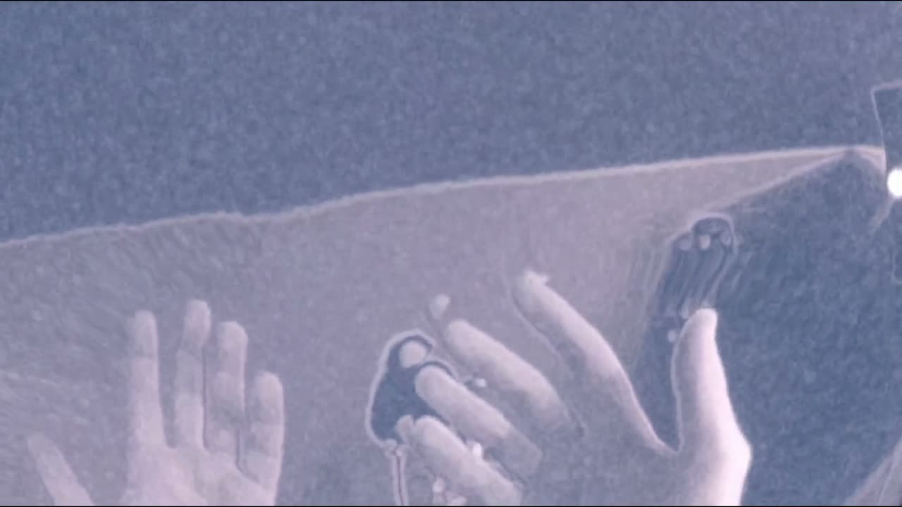

Membrana Neopermeable
Project Description
Membrana Neopermeable is a composition for physical acoustic guitar, virtual guitar, mixed reality (MR) and live electronics. It seeks to investigate the potential of the latest developments in MR and machine learning (ML) technology when questioning the boundaries, and compositional opportunities, between physical and digital music instruments; here, the guitar.
The piece is performed by interacting with both a physical acoustic guitar and a virtual guitar, where the latter ‘appears’ in the same physical space as the performer. This results in a format which is an interactive, MR, compositional experience, made possible through using: an Oculus Quest 2 head-mounted display (HMD - allowing digital overlays, when worn, to appear in the same physical space as the performer), Myo armband sensors worn on the arms (allowing the performer to make custom gestures within MR), the Unity game engine (hosting the Oculus Quest 2/Passthrough API, the standalone project application itself and allowing for C# scripting, physics mechanics, modelling and digital animation), Max 8 (to receive/process biometric information from the Myo armbands and using such biometric data to generate/manipulate sound materials in real-time), and finally Wekinator (to facilitate the ML of custom musical gestures made by the performer; processing and classifying performer biometric information during performance).
Ultimately, through deconstructing the barriers between physical and virtual instrument performance/composition, this piece seeks to observe how future multimodal spaces can be used as compositional assets.
Type of submission
Option 1: “New NIME” - traditional NIME music sessions aimed at showcasing pieces performed or composed with new interfaces for musical expression.
Program Notes
Membrana Neopermeable is an interactive mixed reality piece which seeks to explore the ever-thinning boundary between performing with physical and digital instruments; aiming to discover what this means for the future of music composition. It does this via allowing a performer to compose music through interacting with both a physical and digital guitar within the same physical space, culminating in a live mixed reality experience. In this sense, the performer is presented with both a physical acoustic guitar and a playable virtual guitar which ‘appears’ to be in front of them. This is made possible through using the Oculus Quest 2, the Unity game engine, Max 8, novel biometric sensors (Myo armbands) and open-access machine learning software (Wekinator). Ultimately, this piece seeks to discover how future multimodal spaces can be used as compositional assets.
Media

▶Ethics Statement
Membrana Neopermeable seeks to address issues surrounding accessibility and inclusion when performing with musical instruments. Users of this project can have access to a digital musical instrument (guitar) which they do not have to necessarily own or have with them during performance/play (regarding mobility). This is possible by wearing the Oculus Quest 2 HMD, launching the project from the HMD and interacting with the virtual guitar instrument. Therefore, making practice, play and performance with a guitar instrument more accessible and inclusive to those who cannot afford, or find it challenging to move around, such heavy musical instruments.
The technical or aesthetic elements of this project do not directly address ethical issues such as the effect of carbon emissions or environmental sustainability when using digital technologies to drive modern music composition. This is difficult because the available technologies allowing this piece to investigate the effect of MR on music composition (i.e., the Oculus Quest 2) , and accessibility of instrumental performance, require electrical energy to operate. However, the author of this work is very keen to explore an environmentally positive and sustainable alternative MR technology which allows for the same investigative outcome within music. The author is also keen to explore how performing with virtual instruments within MR, over the internet, can reduce travel (carbon) emissions and associated costs.
The use of performer biometrics in this project (i.e., from the author) was found ethically favourable by a panel at the University of Manchester. This biometric information is never stored or shared. The performer of this work (author) consents to the use of both biometrics and audio-visual recordings. This work does not have any conflicts of interest with NIME on both a financial or non-financial level, which has been checked and verified by the author.
Acknowledgements
This work is supported by the British Engineering and Physical Sciences Research Council (EPSRC), with grant number 2063473.